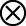
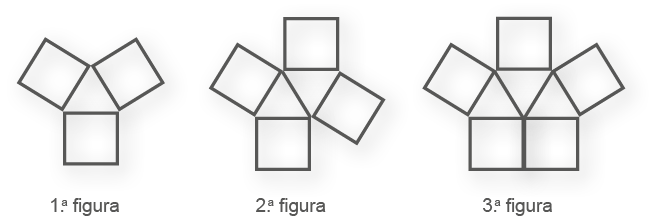
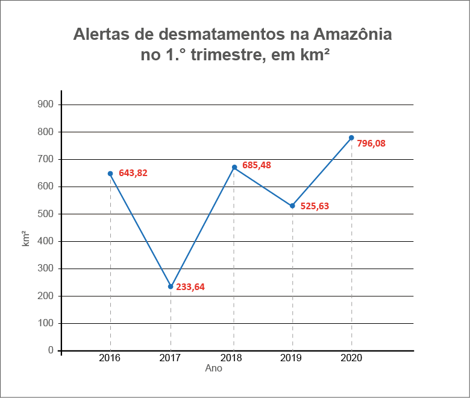
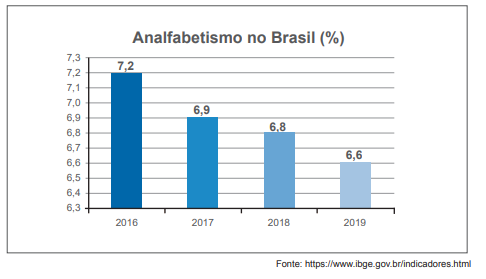

73
CAPÍTULO 4 - Sequências
Aprendemos nos anos anteriores que podemos perceber algumas situações que obedecem a um padrão. Alguns padrões são chamados de sequência recursiva, isso ocorre quando um termo depende dos termos anteriores. Por exemplo, quantos quadrados formarão a próxima figura?

- Troque ideias com seus colegas e professor e, no caderno, represente a próxima figura da sequência.
A quantidade de quadrados a cada termo é 1, 3, 6 e 10. Dessa forma, podemos estabelecer uma representação algébrica para a regularidade desta sequência, onde cada figura a partir do segundo é igual a figura anterior adicionada com sua posição na sequência.
- Figura 2: (F1) + 2 = 1 + 2 = 3.
- Figura 3: (F2) + 3 = 3 + 3 = 6.
- Figura 4: (F3) + 4 = 6 + 4 = 10.
Observe como utilizar um fluxograma para esta sequência recursiva:
![Fluxograma formado por quatro retângulos um ao lado do outro. Entre eles flechas apontadas para a direita. Da esquerda para a direita: o primeiro retângulo é laranja; dentro dele a palavra: Início. O segundo é um retângulo azul. Dentro dele a frase: Considere a figura anterior a figura que você pretende determinar. O terceiro retângulo também é azul. Dentro dele, a frase: Adicione à figura anterior a posição da figura que deseja determinar. O quarto e último retângulo é laranja. Dentro dele a frase: O resultado é a figura que deseja.](../../resources/images/8ANO_U3_image/fluxograma4_0.png)
![Fluxograma formado por quatro retângulos um ao lado do outro. Entre eles flechas apontadas para a direita. Da esquerda para a direita: o primeiro retângulo é laranja; dentro dele a palavra: Início. O segundo é um retângulo azul. Dentro dele a frase: Considere a figura anterior a figura que você pretende determinar. O terceiro retângulo também é azul. Dentro dele, a frase: Adicione à figura anterior a posição da figura que deseja determinar. O quarto e último retângulo é laranja. Dentro dele a frase: O resultado é a figura que deseja.](../../resources/images/8ANO_U3_image/fluxograma4_1.png)
![Fluxograma formado por quatro retângulos um ao lado do outro. Entre eles flechas apontadas para a direita. Da esquerda para a direita: o primeiro retângulo é laranja; dentro dele a palavra: Início. O segundo é um retângulo azul. Dentro dele a frase: Considere a figura anterior a figura que você pretende determinar. O terceiro retângulo também é azul. Dentro dele, a frase: Adicione à figura anterior a posição da figura que deseja determinar. O quarto e último retângulo é laranja. Dentro dele a frase: O resultado é a figura que deseja.](../../resources/images/8ANO_U3_image/fluxograma4_2.png)
![Fluxograma formado por quatro retângulos um ao lado do outro. Entre eles flechas apontadas para a direita. Da esquerda para a direita: o primeiro retângulo é laranja; dentro dele a palavra: Início. O segundo é um retângulo azul. Dentro dele a frase: Considere a figura anterior a figura que você pretende determinar. O terceiro retângulo também é azul. Dentro dele, a frase: Adicione à figura anterior a posição da figura que deseja determinar. O quarto e último retângulo é laranja. Dentro dele a frase: O resultado é a figura que deseja.](../../resources/images/8ANO_U3_image/fluxograma4_3.png)
74
Podemos encontrar outros padrões na natureza, por exemplo:
Podemos observar na imagem uma couve romanesca com várias pontas e nelas outras pontas, formando uma sequência de figuras. Essa propriedade de autossimilaridade é uma característica dos fractais. Vamos relembrar um fractal estudado anteriormente, o Triângulo de Sierpinski:
- Troque ideias com seus colegas e professor e, em seus cadernos, representem a próxima figura da sequência.
Agora, vamos construir um quadro com os estágios que representam essa situação:
- Qual sentença matemática podemos utilizar para representar o número de triângulos pretos da figura no estágio n da sequência?
75
Assim, o número de triângulos pretos de cada figura dessa sequência pode ser obtido por recorrência ao número de triângulos pretos da figura anterior, de modo que o número de triângulos pretos de uma figura seja igual ao número de triângulos pretos da figura anterior, imediatamente multiplicado por 3. Neste caso, temos uma sequência não recursiva.
Vamos construir um fluxograma para exemplificar as 3 primeiras etapas dessa situação.
Também é possível determinarmos sequências numéricas, ou seja, números que apresentam um determinado padrão de um termo para o outro.
Observe:
- 1.ª sequência numérica: 1, 3, 5, 7, 9, 11, 13, ...
- 2.ª sequência numérica: 0, 2, 4, 6, 8, 10, 12, ...
- 3.ª sequência numérica: 5, 10, 15, 20, 25, 30, 35, 40, ...
- 4.ª sequência numérica: 2, 4, 8, 16, 32, 64, 128, 256, ...
- Troque ideias com os seus colegas e professor e, em seguida, respondam quais são os próximos dois termos de cada uma das sequências acima.
- Escreva em seu caderno os próximos três termos de cada sequência. Em seguida, copie e
complete o fluxograma, por meio do qual seja possível obter os termos, substituindo o símbolo
 pela fórmula da
sequência.
- 5, 10, 15, 20, ..., ..., ....
76
- Observe as sequências numéricas a seguir e escreva, em seu caderno, os três próximos
termos de cada uma.
- 1, 1, 2, 1, 3, 1, 4, 1, 5, 1, 6, 1, ...
- 0, 8, 16, 24, 32, 40, 48, 56, ...
- 3, 7, 12, 18, 25, 33, 42, 52, ...
- 47, 42, 37, 32, 27, 22, 17, ...
- Observe as sequências das figuras abaixo:

- Quantos triângulos terá a 5.ª figura dessa sequência? E quantos quadrados?
- Qual é a sentença matemática que representa a quantidade de quadrados no estágio n?
- Em duplas, criem uma sequência recursiva e outra não recursiva, apresentando o primeiro termo e a regra para a obtenção dos termos seguintes, a partir dele. Troquem as atividades com outra dupla, para que eles escrevam os cinco primeiros termos das sequências elaboradas por vocês. Depois, verifiquem se os números indicados por eles estão corretos.
- Crie, em seu caderno, um fluxograma de uma das sequências que você elaborou na atividade anterior.
- Interpretação e construção de gráficos
O gráfico a seguir apresenta informações importantes sobre os alertas de desmatamentos na Amazônia, o qual bate recorde no primeiro trimestre de 2020, segundo dados do Inpe.
77

Fonte: CNN Brasil. Terra Brasilis, do Instituto Nacional de Pesquisas Espaciais (Inpe). Disponível em: https://www.cnnbrasil.com.br/nacional/amazonia-legal-tem-recorde-de-alertas-de-desmatamento-no-1o-trimestre-de-2022/. Acesso em: 27 jun. 2022. (Adaptado).
- Troque ideias com um colega e respondam, no caderno, as seguintes
questões.
- Em que ano ocorreu a maior quantidade de alerta de desmatamento na Amazônia?
- Qual foi a área de alerta de desmatamento em 2020?
- De 2016 para 2017, a quantidade de alertas de desmatamentos emitidos diminuiu em quantos quilômetros quadrados?
- De 2018 para 2019, a quantidade de alertas de desmatamentos emitidos diminuiu em quantos quilômetros quadrados?
- Na opinião de vocês, quais as causas que ajudam na diminuição do desmatamento da Amazônia?
- Qual outro tipo de gráfico vocês escolheriam para representar os alertas de desmatamentos na Amazônia? Por quê?
- Realizem uma pesquisa a respeito dos desmatamentos na Amazônia. Após recolherem os dados, façam a análise deles e elaborem gráficos de barras para representá-los.
78
- A seguir, temos um gráfico que nos mostra a quantidade de turistas que vieram ao
Brasil nos anos de 2018 e 2019.
![Gráfico de barras horizontais, com o título Chegada de Turistas ao Brasil. No eixo horizontal, o número de turistas, de zero a 4.500.000. Abaixo do eixo horizontal, a legenda, em azul: 2018, em marrom, 2019. No eixo vertical, de baixo para cima, os países. América do Sul: 3.597.179, em 2018; 4.050.598, em 2019. América do Norte: 689.583, em 2018; 750.484, em 2019. Ásia: 64.605, em 2018; 69.436, em 2019. América Central e Caribe: 45.991, em 2018; 43.896, em 2019. África: 255.138, em 2018; 290.974, em 2019. Fonte: Anuário Estatístico de Turismo 2020 – Volume 47 – Ano Base 2019.](../../resources/images/8ANO_U3_image/matematica-8-graficos-pg76.png)
Fonte: Anuário Estatístico de Turismo 2020 - Volume 47 - Ano Base 2019. Disponível em: http://www.observatorio.turismo.ba.gov.br/wp-content/uploads/2021/03/Anuario_Estatistico_de_Turismo_2020_-1.pdf. Acesso em: 27 jun. 2022. (Adaptado).
- Qual foi o total de turistas que chegaram ao Brasil nos anos de 2018 e 2019 das origens mencionadas?
- Do total de turistas de 2018, qual foi a porcentagem de turistas que chegaram ao Brasil vindos da América do Sul?
- A partir dos dados do gráfico, construa uma tabela de dupla entrada.
- Observe o gráfico a seguir: 
79
Em seu caderno, responda:
- Do que se trata o gráfico?
- De acordo com o gráfico, o que está acontecendo com a taxa de analfabetos no Brasil?
- Quando houve a maior diferença na taxa de um ano para o outro? Qual foi essa diferença?
RELEMBRE
- Determine o coeficiente de x3 no polinômio (5x - 1)(3x + 1)2.
- Calcule a soma dos coeficientes do polinômio (x + 4y)(x - 4y) + 8x2 - 11y2.
- Calcule:
- -5xy(9x + 6y) - 10x2y + 13xy2
- (3a + b)(a - b) + 8a2 - 14ab - 9b2
- (-10x4y6 + x2y3) : (xy) + 8x3y5
- (PUC-SP) A expressão (x + y)(x2 + y2)(x - y) é igual a:
- x4 + y4
- x4 - y4
- x3 + xy2 - x2y - y3
- x3 + xy2 + x2y + y3
- O produto (2x2 + 3x - 5)(x6 - 2) é um polinômio de grau:
- 10
- 12
- 8
- 9
- A expressão que deve ser somada a a2 + 6a2b - 12a2b2 para que resulte o
quadrado de 2a - 3ab é:
- 3a2 + 3a2b2
- -3a2 - 3a2b2
- a2 - 9a2b2 + 12a2b
- 3a2 + 3a2b2 + y6
- Sendo M = x8 + y6, N = -5x8 - 8y6 e P = 3x, determine:
- M + N + P
- M - N + P
- M ∙ N
- N ∙ P